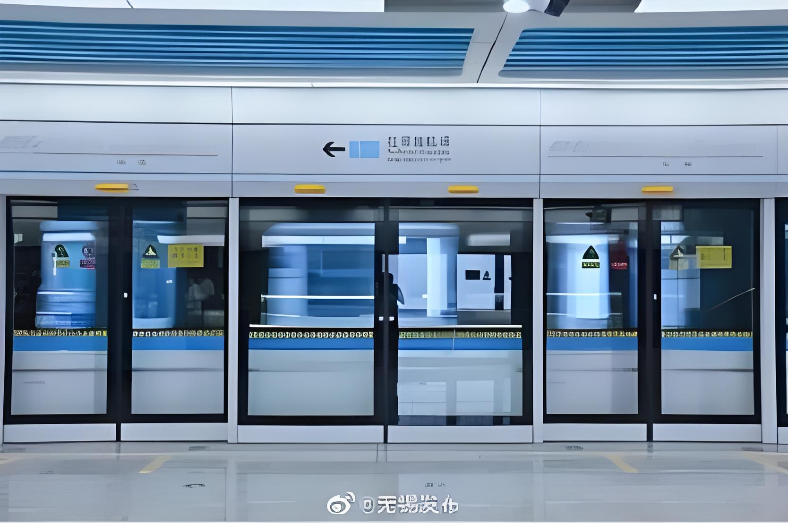
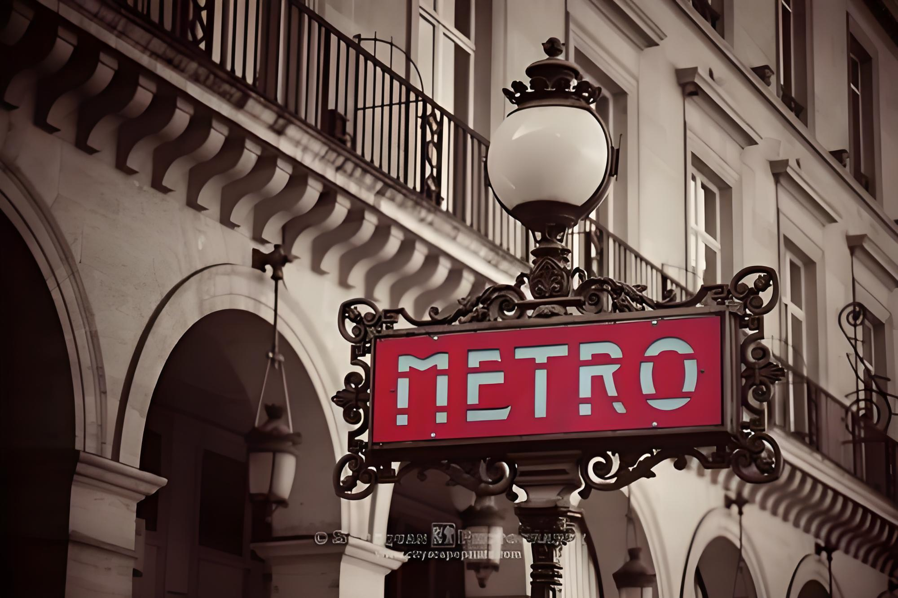

2 年商业分析工作经验，具备业务洞察、数据建模、行业研究、方案输出的全链条问题分析和解决能力，擅长用结构化分析框架拆解复杂业务问题，并将研究结论转化为可执行的经营策略与量化目标，推动高层决策。
求职意向：经营 & 商业分析岗
擅长通过经营分析、异动归因识别增长瓶颈，挖掘"存量提质"与"增量拓展"机会
熟练使用 SQL（取数与清洗）、Tableau（看板搭建）、Excel（财务建模与测算）
丰富的跨组织协同经验，拉通业务与财务团队统一数据口径，推动达成共识
具备扎实的行业分析和标杆研究能力，能独立输出高质量的研究报告和汇报方案，支撑客户决策和业务拓展
Education
国际贸易学
国际经济与贸易
Experience
广东中大管理咨询集团股份有限公司
工作概述：深度参与 5 个跨行业的战略研究与经营分析项目，负责集团及下属子公司的业务洞察、市场分析、行业研究、数据建模、报告撰写等核心工作。
个人价值：作为项目核心成员，能独立对接和响应需求，通过经营分析、市场研究、商业分析及新模式探索，输出可落地的支撑高管决策的商业分析方案，并已在阶段性落地中。

主导集团旗下资源经营与物业服务两大板块的经营诊断和业务策略分析，推动多项战略举措写入规划报告
完成集团经营诊断、标杆研究与 6 家子公司五年财务建模，输出可落地的经营目标和业务策略
北京网聘信息技术有限公司（智联招聘）
项目管理：协助项目经理开展校园招聘项目的全流程管理，在 ERP 系统上完成立项、预算、需求下单、结项等关键节点操作。
数据分析：累计参与 10 余个校园招聘项目，每周整理并分析招聘数据报表（如渠道效率、转化率等核心指标），并定期输出业务复盘报告。
个人成长：在大型招聘平台的项目运作中建立了流程化思维，学会了如何在快节奏的多项目并行环境中进行优先级管理和精准沟通，积累了 B 端客户服务与数据驱动决策的实践经验。
北京研师亦友教育咨询发展有限公司（创业团队）
业务拓展：聚焦经管类考研赛道，分析市场规模与竞争格局，成功推动 6 个新专业项目团队建立并落地，具备从 0 到 1 的市场分析和项目落地能力。
竞品分析：持续跟踪竞品动态，分析产品策略与定价机制，输出调研报告，为产品部门提供产品优化建议。
个人成长：在创业团队中快速适应多角色切换的工作模式，锻炼了在资源有限条件下独立推动业务从零到一的能力，建立了市场导向的思维习惯——从市场规模判断、竞品对标到产品定位的全流程视角。
Research
深度行业洞察，以研究驱动决策

深入剖析巴黎地铁 RATP 与 IDFM 的可持续运营模式，为中国内地轨交企业提供借鉴
系统梳理资源循环产业政策、市场空间与痛点，提出国企布局的五种可实施路径与标杆案例
Contact
电话
15879051684
邮箱
tuyuqing_u@163.com